How to start using crypto as a user.
Install a wallet you understand, send a tiny test payment, then learn to read the explorer before you touch a card or a yield product.
This guide contains referral links for Ether.fi Cash, Plasma One, the Jupiter Card and Arcus. I may receive a benefit if you use them. That relationship does not change the custody, fee or risk distinctions below. Availability depends on your country and each issuer’s rules. This is not an offer of credit or a recommendation to spend or trade.
Hot wallet versus hardware wallet

A hot wallet is an app on a phone or in a browser. Keys live on a machine that connects to the internet. That is convenient and that is the usual way people get drained: a fake site asks you to sign, or malware reads the seed.
A hardware wallet (Ledger, Trezor, Keystone and others) stores keys in a dedicated device. You still use a hot wallet as a screen, but the device must physically confirm the signature. Pair one with Rabby or MetaMask for Ethereum, and with Jupiter or Phantom for Solana, once the amount is larger than you would leave in a browser.
Start with a hot wallet. Write the seed on paper you store yourself. Send a dollar or two to that address from an exchange, then send it back, before you move anything you care about. If you cannot find the transaction on an explorer, stop.
Rabby versus MetaMask
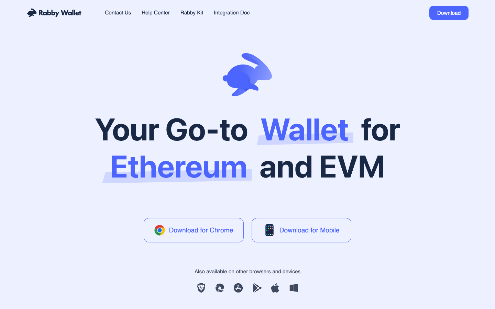
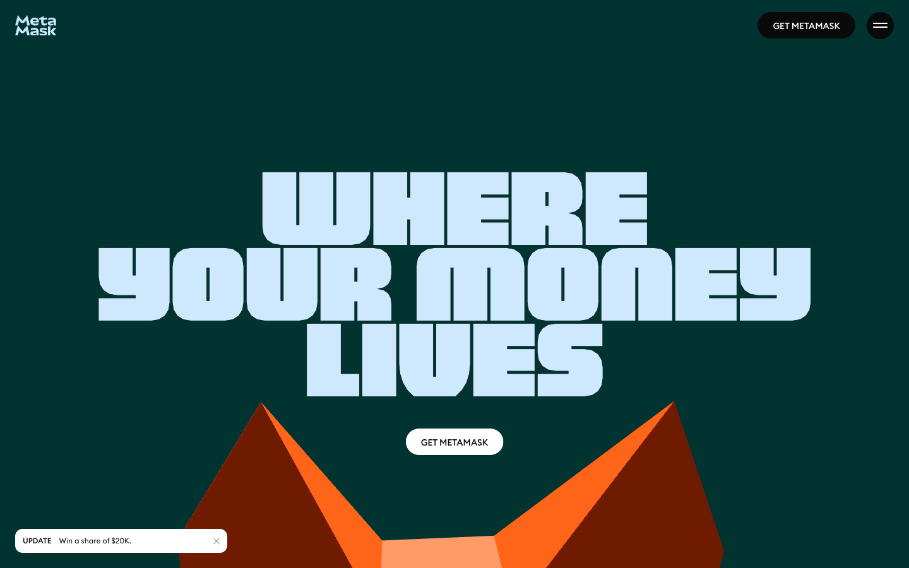
My preference is Rabby for Ethereum and other EVM chains. I keep MetaMask installed as a fallback when a site still assumes it.
Moamen Basel
Both are non-custodial browser wallets. MetaMask, from Consensys, is the default most tutorials still name. Rabby, from the DeBank team, shows you the expected balance changes before you sign. That simulation is the reason I use it. It is not a guarantee. Simulation can fail, and a signature you approve on a malicious contract still spends.
Rabby also switches networks for you and has a built-in approval manager, so you can revoke token allowances without a separate site. It is EVM-focused. It will not replace a Solana wallet. MetaMask in 2026 also talks to Solana and Bitcoin, and its mobile app is further along. If you only want one icon on your phone, MetaMask is the broader product. If you sign DeFi transactions on a desktop every week, Rabby is the clearer signer.
Download Rabby from rabby.io and MetaMask from metamask.io. Check the URL twice. Phishing copies of both exist.
Solana wallets: Jupiter over Phantom
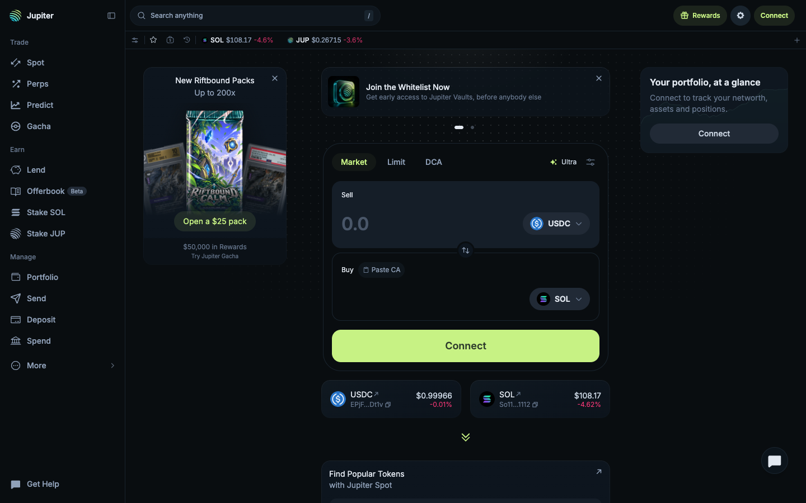
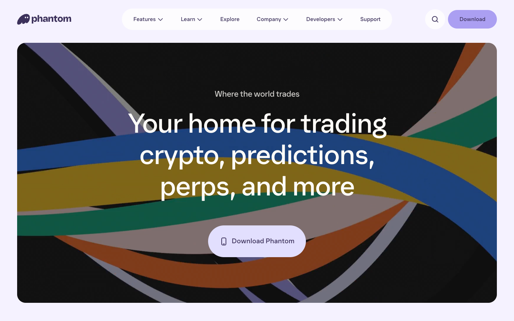
On Solana I prefer Jupiter over Phantom. Phantom is fine, and more apps speak it natively. Jupiter is where I actually swap and spend.
Moamen Basel
Phantom is the wallet Solana users were trained on. It is simple, it is everywhere, and its in-app swap already uses Jupiter’s routing under the hood. Jupiter’s own wallet is the trading surface: Ultra routing, DCA, perps, gasless sends on eligible flows, and the Spend stack for the card. If your first Solana action is a swap, start in Jupiter. If a dApp only offers a Phantom button, Phantom will still connect; you can import the same seed into both, or keep Jupiter as the daily driver and Phantom as the compatibility wallet.
Open Jupiter at jup.ag. Phantom is at phantom.com. Same rule as EVM: never type a seed into a site that is not the wallet you just downloaded.
How to check a transaction on Etherscan
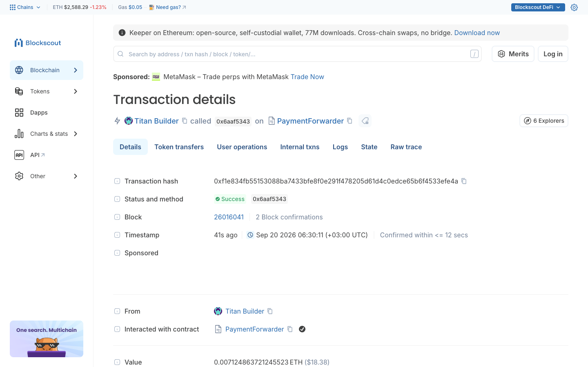
1. Copy the transaction hash from Rabby, MetaMask or the sending exchange. It starts with 0x and is 66 characters.
2. Open etherscan.io (or eth.blockscout.com if you want a second view) and paste the hash.
3. Read Status first. Pending means it is still in a mempool. Success means a block included it. Failed means it was included but the call reverted; you still paid gas.
4. Read Confirmations. That integer is confirmation time in block-count form. One confirmation is inclusion. For a small transfer I will often move on after a few. For a large one I wait until the block is old enough that Ethereum’s checkpoint finality has had time to land, about two epochs or 13 minutes. The terms page tables that wait.
How to check a transaction on Solana
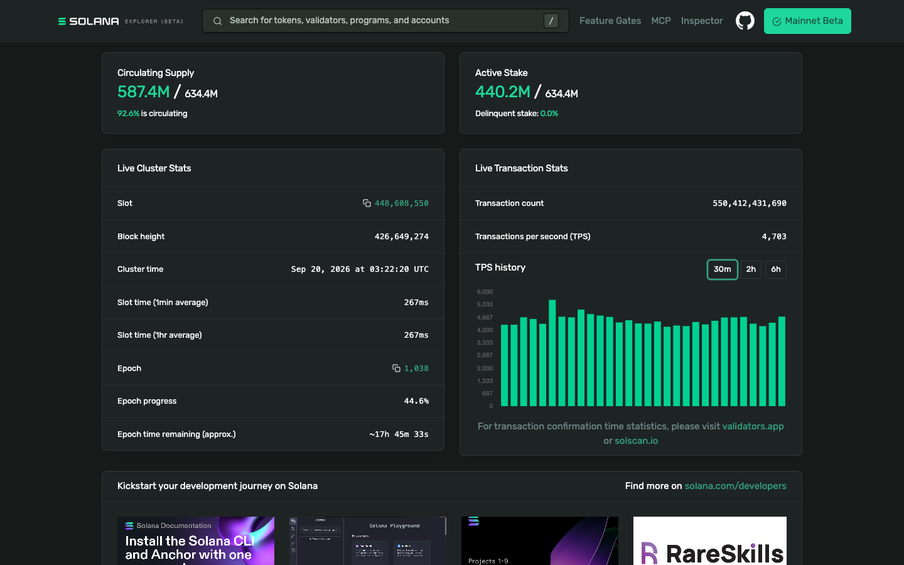
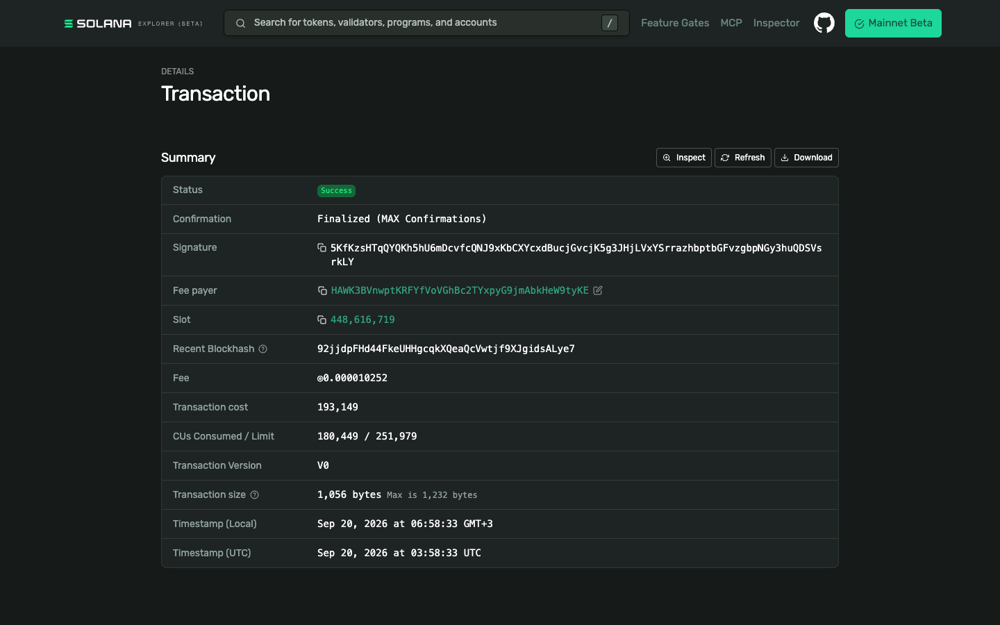
Copy the signature from Jupiter or Phantom. Paste it into solscan.io or explorer.solana.com. Status is the confirmation field. Processed is an optimistic view. Confirmed means a supermajority of stake has voted. Finalized means 32 confirmed slots have passed. That last step is the confirmation time that matters on Solana: seconds, not an hour, but still a wait you should watch on a large payment.
Crypto cards
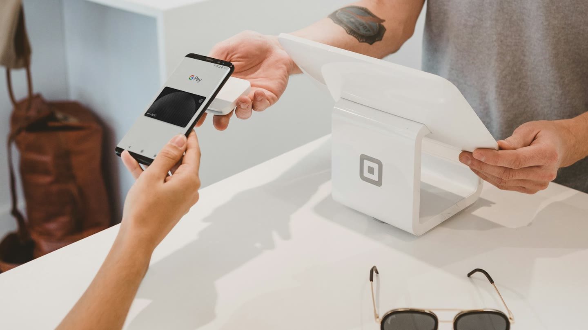
A crypto card is a Visa (sometimes Mastercard) issued against a crypto or stablecoin balance. You are not borrowing. You spend what you loaded. Three products I actually look at: Ether.fi Cash for EUR travel, Plasma One if you already live in AI subscriptions, and the Jupiter Card if your money is already on Solana.
All three need identity checks. All three can freeze or decline merchant categories. None of them is a substitute for a wallet whose seed you hold.
Ether.fi Cash and 0% FX in Europe
Open Ether.fi Cash Referral link ↗
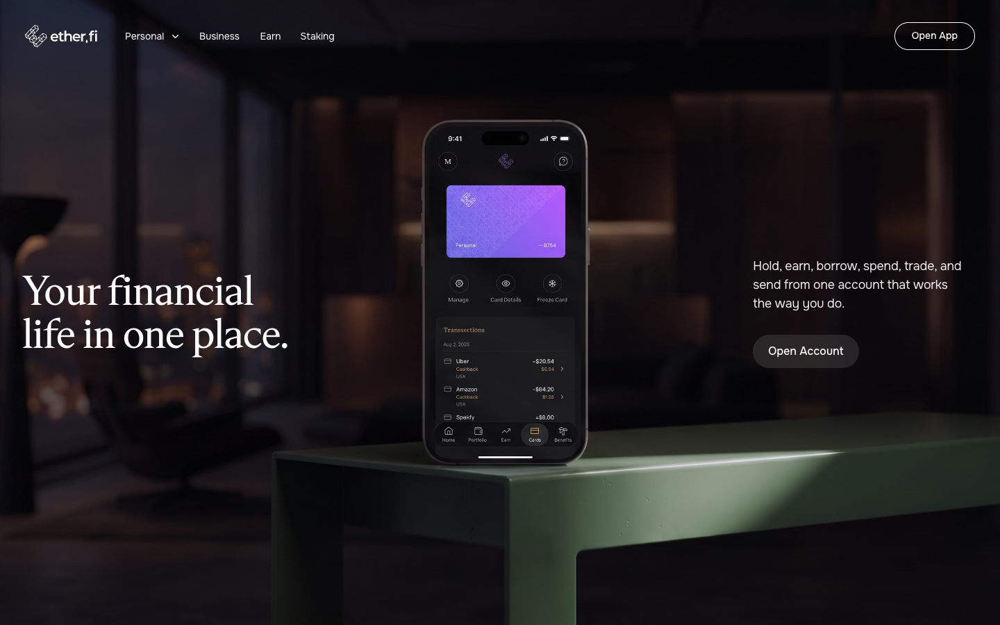
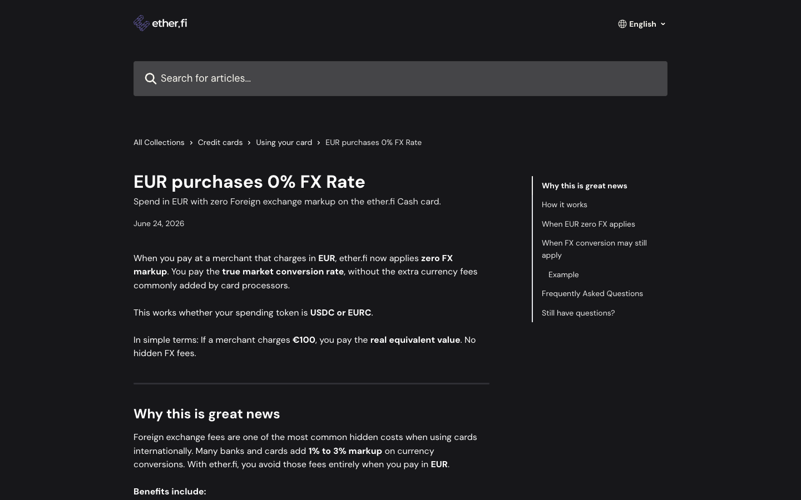
If you travel in the euro area, this is the line that matters. When a merchant charges in EUR, ether.fi’s help center says it applies zero FX markup and converts at the market rate, whether you spend USDC or EURC. Choose EUR at the terminal. Dynamic currency conversion (paying in USD at a European till) throws that benefit away.
Checked 20 September 2026 against EUR purchases 0% FX Rate and the FX rate article: FX conversion still applies when the charge is in a currency other than USD or EUR. The added markup is 0 to 0.5% on Core, 0 to 0.25% on Luxe, and none on Pinnacle and VIP, on top of a stated ~1% base rate. Cashback on EUR spend uses a tighter ladder so the zero-FX perk is not stacked with the full USD cashback. Cashback is paid in ETHFI after a 7-day lock, not in cash.
Eligibility, US-state exclusions and ATM rules change. Read the live help center before you book a trip around the card.
Plasma One and the AI tiers
Plasma One invite code: 56VLD9
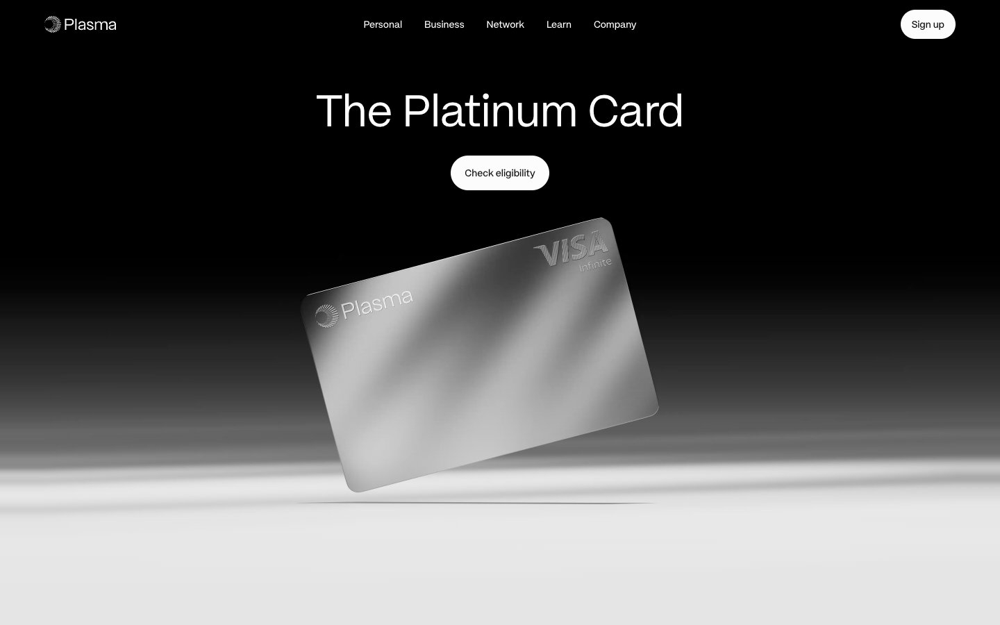
Plasma One is a self-custodial Visa funded from a stablecoin wallet on the Plasma chain. Cashback is paid in XPL, so the headline percent is a token amount, not dollars in the bank. Official pages on 20 September 2026 list three live tiers:
Lite
2%Free entry. Base cashback, no AI boost, no subscription rebate, one virtual card, standard fees.
Core
5% AI3% base on the first $1,000 a month, then 2%, 1%, 0.25%. 5% on AI spend up to $500 a month. ChatGPT Go rebate. $199 a year or lock 20,000 XPL for 12 months.
Platinum
10% AI4% base on the first $3,000, then 3%, 2%, 1%. 10% on AI spend, 10% on eligible flights up to $600 a year, Claude Pro and ChatGPT Plus rebates. Lock 100,000 XPL for 12 months.
Source: plasma.org/personal/core and /platinum, captured the same day. Terms apply; the pages themselves footnote the rates. If you do not already hold XPL, Lite is the only tier that does not ask you to lock a volatile token.
Jupiter Card
Open the Jupiter Card Referral link ↗
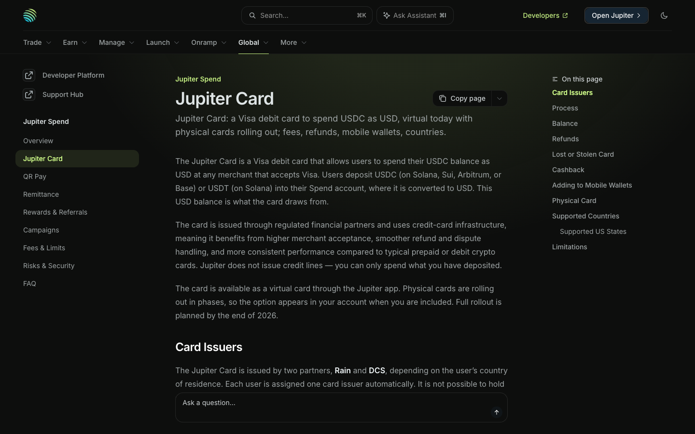
If your stablecoins already sit on Solana, this is the least awkward card. You deposit USDC (Solana, Sui, Arbitrum or Base) or USDT (Solana) in the Jupiter app. The deposit credits 1:1 as a USD spend balance. You spend that balance at Visa merchants. Jupiter does not extend credit.
Official fees on 20 September 2026, from Jupiter Spend fees: no annual fee, no deposit fee, no FX on USD payments, 1% FX on Rain-issued cards and 1.8% on DCS-issued cards for non-USD payments. You do not pick the issuer; it follows your country. Base cashback on qualifying spend is 2%, with a higher rate available through Jupiter’s own referral program. Physical cards cost $13.13 plus shipping when they appear in your account.
Europe travel is not this card’s strength. Ether.fi’s EUR 0% FX is the better documented deal for euro tills. Jupiter is the Solana-native spend rail.
Stocks on a crypto network, 24/7
Join the Arcus waitlist Referral link ↗
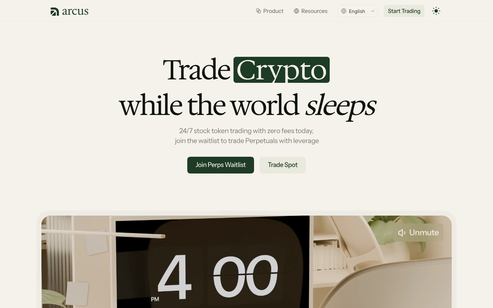
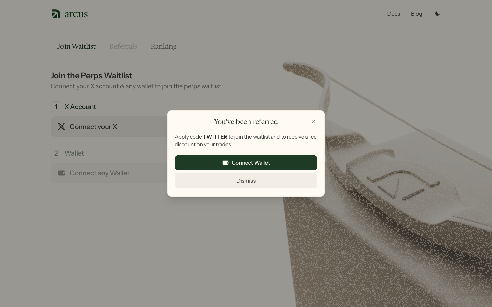
US stock exchanges close. News does not. On Arcus you can trade stock tokens on Robinhood Chain around the clock, including weekends, instead of waiting for 9:30 a.m. Eastern. Official copy on 20 September 2026 describes spot stock-token trading as 24/7 with zero fees for eligible users, and perpetuals (leveraged) as waitlisted. See Can I Trade Stock Tokens on Weekends? and What Are Stock Tokens?.
A stock token is not the same as a share certificate. Arcus’s own docs say the tokens give economic exposure through a cash redemption claim. They do not give voting rights or ownership of the underlying company. They are issued under a tokenised-products programme (Robinhood Assets in Jersey, with Bitstamp as an authorised participant). Tracking can slip. Redemption can be limited. The product is not available in the United States, the United Kingdom, Canada, and other restricted places listed in their terms.
If your jurisdiction is allowed and you already have a wallet, this is the 24/7 stocks rail I would look at. Spot beta is open to eligible users without the waitlist. The waitlist is for perps. Use waitlist.arcus.xyz/s/TWITTER so the TWITTER code is applied. Leverage is optional and can wipe a position. Start with spot if you only wanted weekend access to names that actually quote.